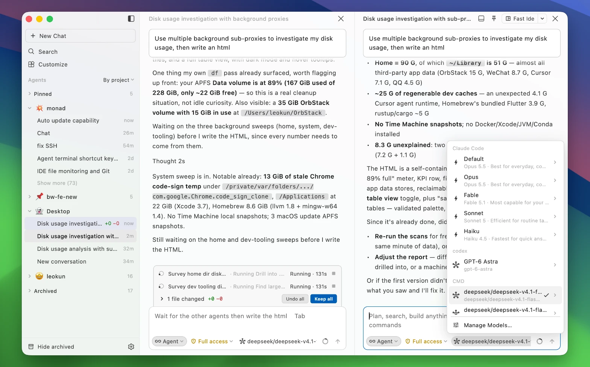
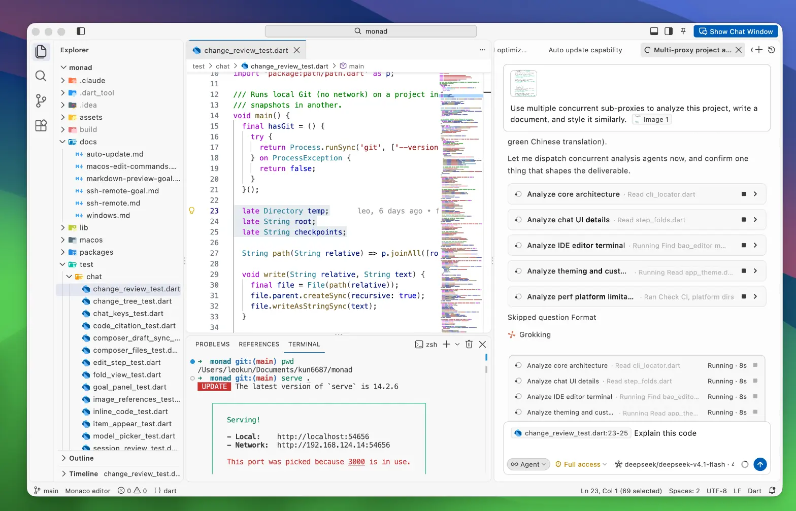
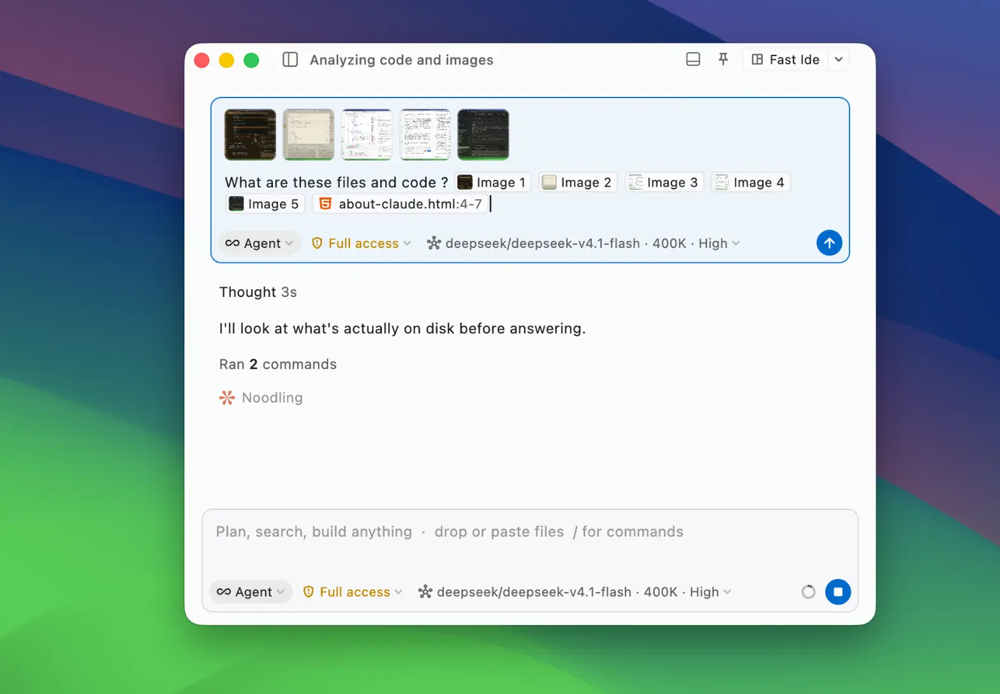
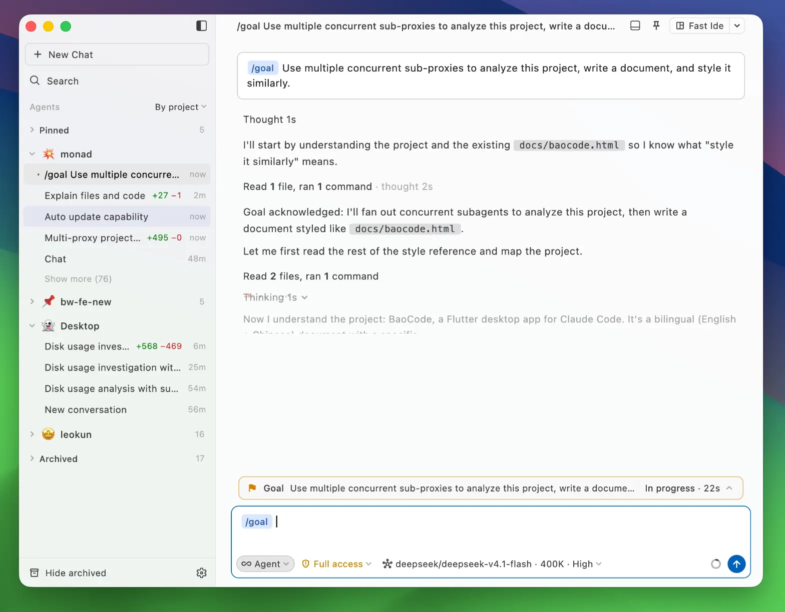
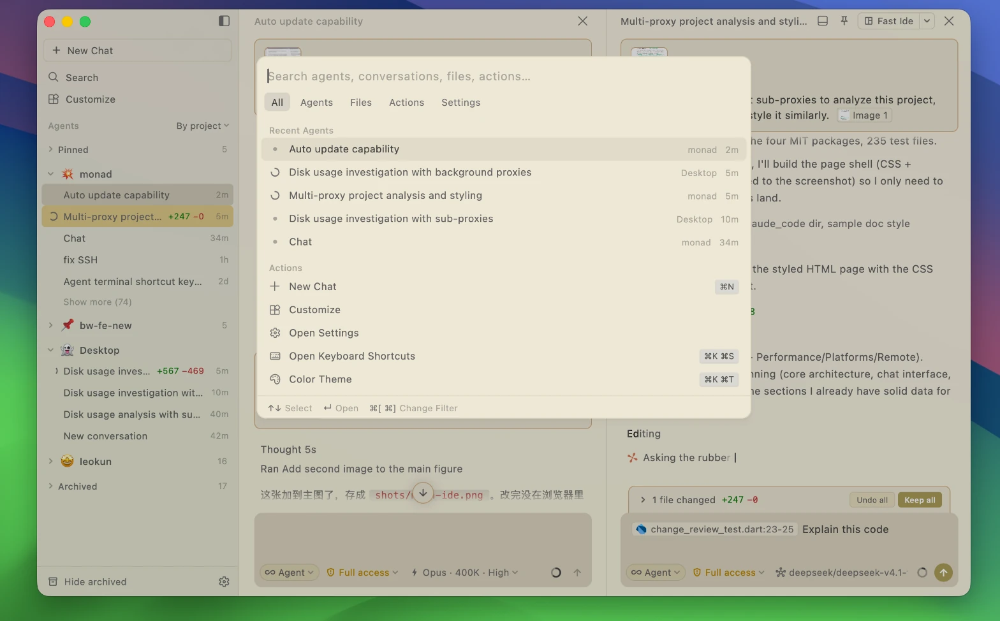
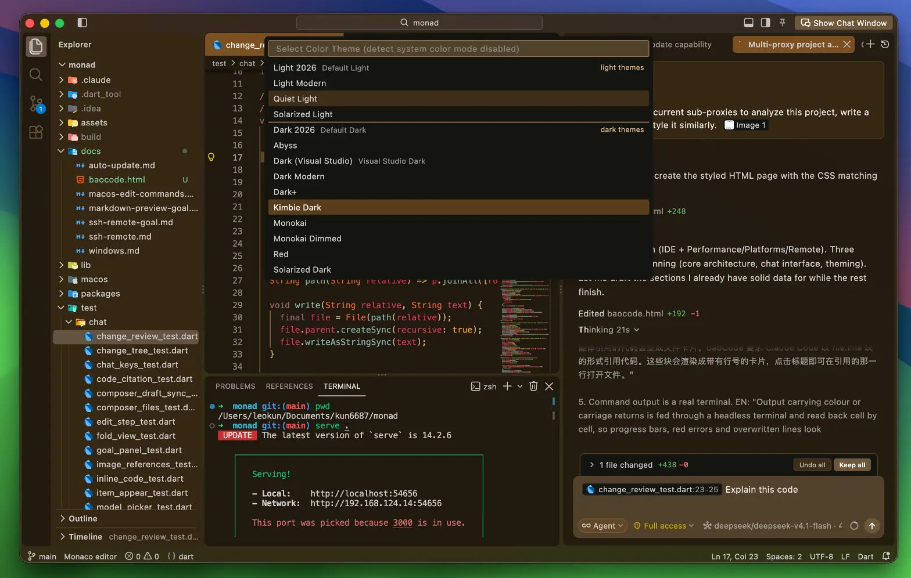
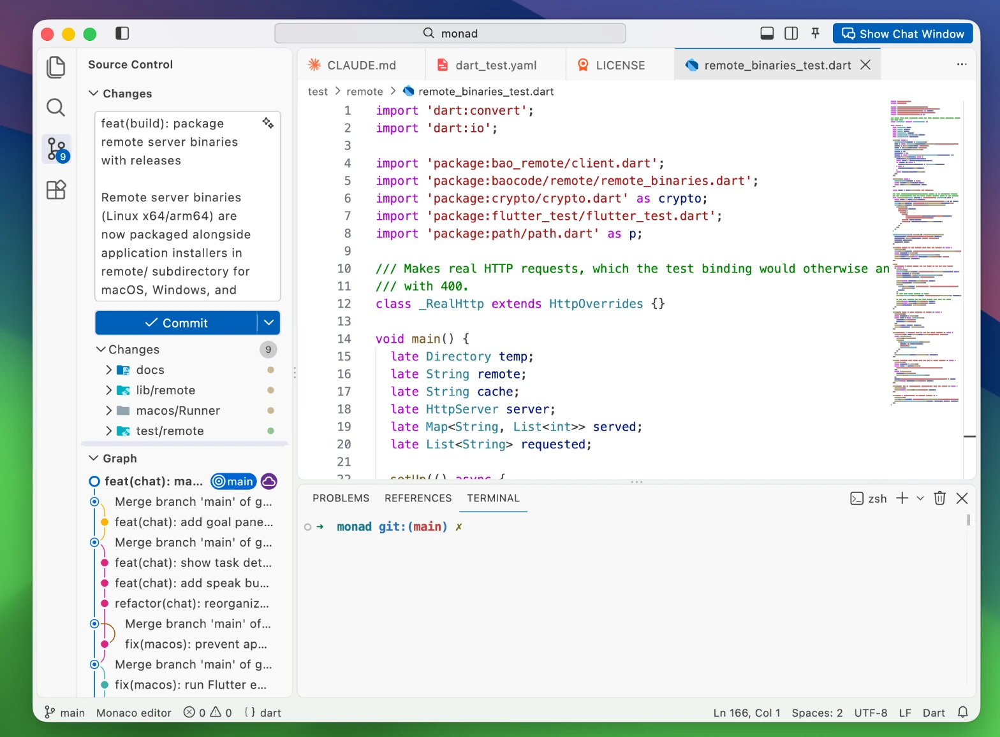
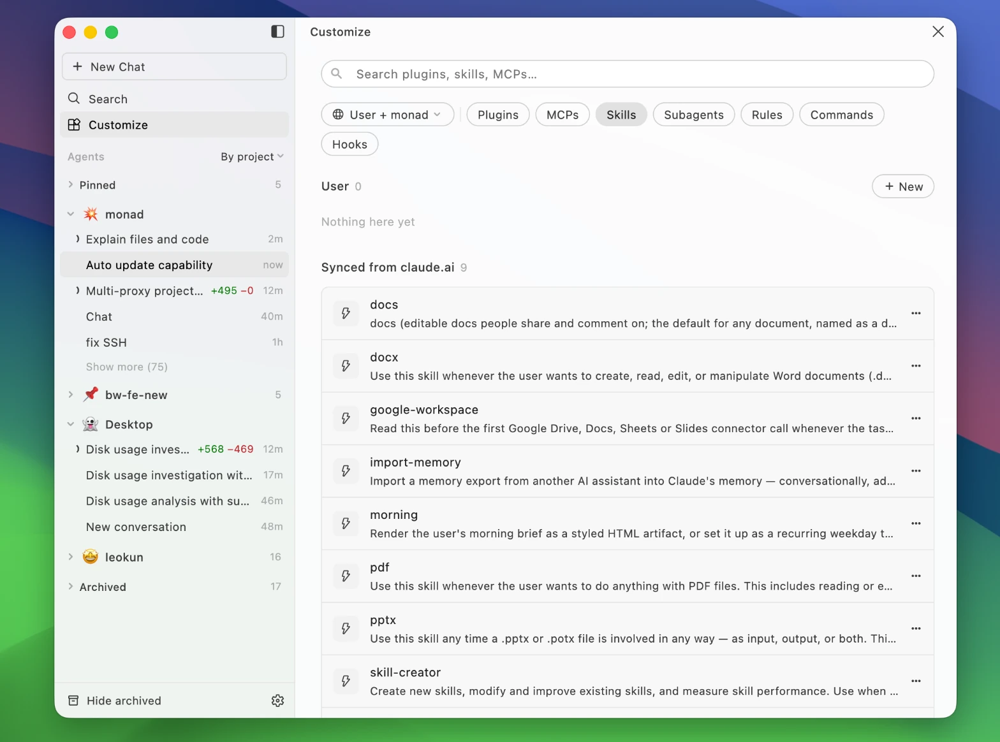
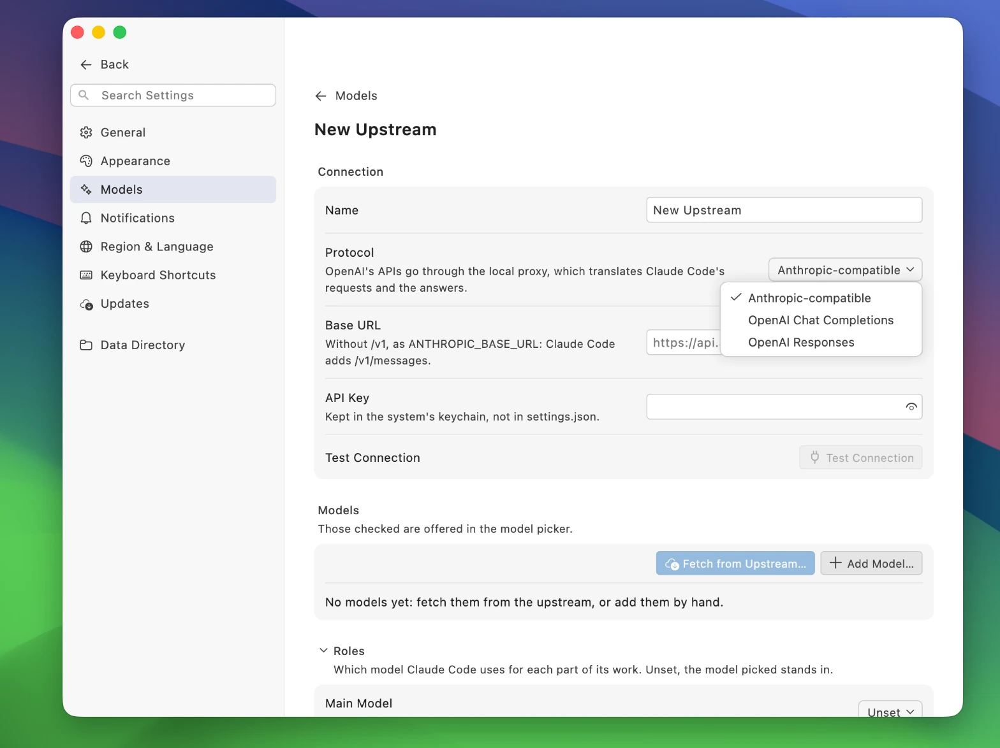
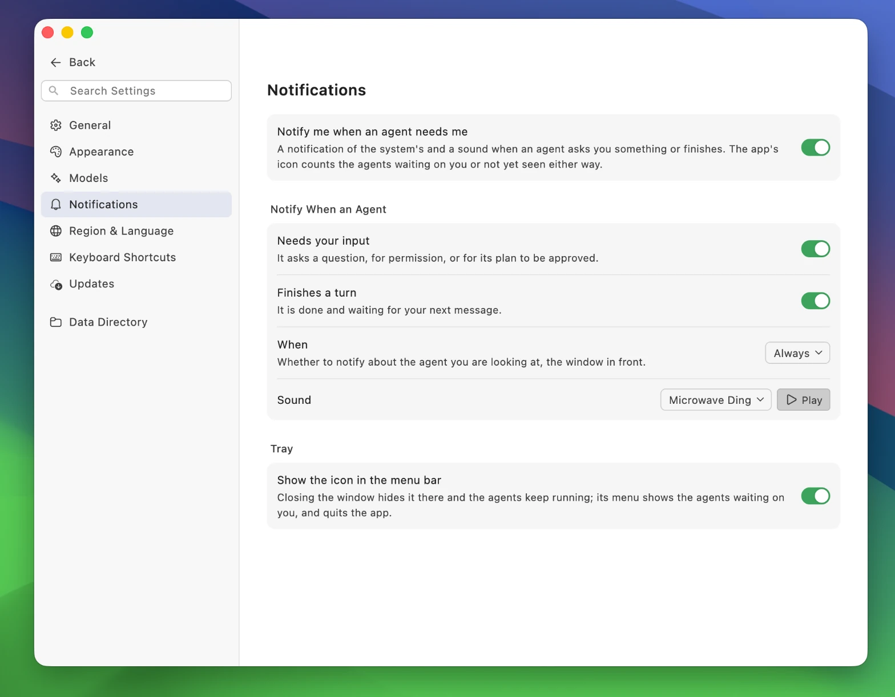

BaoCode
An awesome, easy-to-use desktop UI for Claude Code, with a millisecond-fast IDE built in.


Why we built this
We use Claude Code every day. The terminal is a fine place to run it, but a poor place to read it: long diffs scroll out of view, earlier steps are hard to find again, and reviewing what changed means switching to another app.
BaoCode is the window we wanted around it. It is drawn natively, it opens instantly, and it never makes Claude wait on the interface.
Then it kept growing: its agents use your own browser, make and read pictures, and run on any model; ideas go into Stash as they come, to hand over when they’re ready; and when you’re away from the computer, your phone keeps you in charge. All of it in the same native app, as light as ever.
The interface
The interface is the point of BaoCode, so most of the work went into details you may not notice until you go back to something else:
- Steps fold away. Reads, searches and commands collapse into single lines, so the conversation reads as what Claude said and did.
- Every change can be reviewed. What Claude changed is marked right in the code, each part to keep or undo on its own, or a file or everything at once; in the side panel beside the chat, with no trip to the IDE. Checkpoints keep only the files the agents edited, in BaoCode’s own data folder, never in your repository’s
.git. - You can see what it is doing. The current task, the subagents and the background tasks running stay above the input while Claude works; the time so far, the writing speed and the tokens roll by as it goes, and each turn ends with its time and cost.
- A long conversation at a glance. Beside the chat sits a minimap of the whole conversation, your messages, code, tables and changes each telling apart; a piece of liquid glass marks where you are, and a click or a drag takes you anywhere. However long a conversation, it is read from its end, the earlier turns as you scroll up, so it opens without a wait.
- Give it a goal. Type
/goaland what you want done, and Claude keeps working until it is met. The goal stays above the input with how long it has been worked on; open it to see why it isn’t met yet, or to change it. Set one in the middle of a task and it takes effect at once. - The input is a rich-text editor. Copy code from the editor and it arrives as a reference to the file and its lines; paste images or drop in files and they sit right where you put them in the sentence. Mention files with @, and Polish tidies your words in one click, tags and code kept as they are. Messages sent while Claude is busy queue above the input and go in turn, to take back or send ahead.

about-claude.html:4-7, each a tag where it sits in the sentence, opened again to edit while Claude works on it.
/goal: Claude works toward it, and above the input it shows as in progress, with the time spent so far.Your Chrome, the agent’s DevToolsNew
Agents use the very Chrome you use every day (or Edge, Brave or Arc), with your sign-ins, cookies and extensions, not a headless browser of their own that’s signed in to nothing. And what the BaoCode extension gives them is more than opening pages and clicking about: it’s every panel of Chrome’s developer tools, 28 browser tools in all, to look something up in a dashboard, test the page you just wrote, or chase a bug that only shows in production, all in your own browser.
| What | What the agent can do |
|---|---|
| The basics | Open pages, go back and forward, reload, list and close tabs, run JavaScript in the page |
| Clicking and typing | Click, type, press keys and scroll, by an element or its words; several steps in one go, each waiting for the page; answer dialogs |
| Reading the page | The page’s words and the elements to act on; screenshots, with each element boxed if asked |
| Network | Every request’s headers, body and response; save them as HAR or curl; send any request again from the page, with its cookies and your changes; WebSocket messages |
| Performance | Record a load or a stretch of use: Web Vitals (LCP, CLS, INP), long animation frames and the scripts in them, the main thread’s time, a CPU profile |
| Memory | Heap and DOM use; two snapshots compared, to find the objects that leak and the detached DOM held |
| Breakpoints | Line, conditional and log breakpoints, stepping, the variables where it paused, by their source-mapped names |
| Sources | List and read the page’s scripts, mapped back to sources such as src/App.tsx |
| Elements | CSS rules and what overrides what, the box model, event listeners; the React, Vue or Angular component and its props |
| Interception | Block requests, mock responses, rewrite requests and responses, add delay |
| Emulation | A phone, a slow or no network, a slow CPU, dark mode, another language, time zone or place, a vision deficiency |
| CSS coverage | How much of each style sheet no element ever used |
| Storage | Cookies (HttpOnly too), localStorage, sessionStorage, IndexedDB, Cache Storage, service workers |
| Console | Console messages and uncaught exceptions |
| Debugging history | Pages, requests and console errors kept with no recording to start; detailed mode adds bodies and what you did |
| Record and redo | Watch you do something once, keep the steps, and do it again in your browser |
They touch only the tabs you share with them, those in the yellow BaoCode tab group: the BaoCode button in the toolbar hands over the tab you’re on, and dragging a tab out of the group takes it back. BaoCode’s side panel shows the page they’re using as it happens, and you can click and type in it to take over at any moment. The extension only passes messages along, and everything stays on your computer.
Get the extension from the Chrome Web Store, or download the zip to load it unpacked; on macOS and Windows. What it does and doesn’t do is in its privacy notes.
Stash
Good ideas turn up while you’re busy with something else. Give Stash a global shortcut, press it in any app, and a small panel takes whatever you have: text, screenshots, files, links, code. Each note gets its own number, like an issue.
When it’s ready, click Implement in BaoCode and choose a new git worktree or the current branch, or @ the note in a chat. The chat and the note are linked, and the note’s card shows how it’s going. Jotted down too quickly? Clarify turns a one-liner into a full request, using its images and attachments.
Sign in to GitHub or GitLab (GitHub Enterprise and self-hosted GitLab too) to import issues into Stash and see the linked issues and pull requests with their latest state and checks. Replying to or closing an issue waits for your OK, with a warning first if the text looks like it holds a local path or a secret.
Pictures
Ask an agent for an icon, an illustration or a rough mock-up, and it makes it with an image model from your upstreams and saves it where you said: the Images API, chat interfaces such as OpenRouter’s and Gemini’s, and Codex’s gpt-image-2 all work.
Pictures show right in the chat too: image files it reads, browser screenshots, an MCP tool’s images, and local images in a message. Click one to see it whole, and ← → go through every picture in the conversation. Images on the web stay links, so that loading one doesn’t tell someone’s server what the agent read.
Speed
VS Code and Cursor are built on Electron. Each window is a web page, and every copy of the app carries its own Chromium browser and Node.js. That is where the seconds at launch, the gigabyte of memory and the 200 MB downloads go.
BaoCode is not a web page. It is a native app that draws its own interface straight to the GPU, with no browser underneath.
| BaoCode | VS Code | Cursor | |
|---|---|---|---|
| Launch | ≈ 0.18 s | ≈ 2–3 s | ≈ 2–3 s |
| Memory, one window idle | ≈ 120 MB | ≈ 970 MB | ≈ 1.9 GB |
| Processes, one window | 2 | 8 | 13 |
| Download size, Windows | ≈ 16 MB | ≈ 244 MB | ≈ 214 MB |
Your themes
BaoCode’s colors are VS Code’s theme colors, so the themes you already use look the way you expect: the editor, the conversation and the sidebar all follow them. Change the theme whenever you like; the window previews each one as you move through the list.
And not only the ones that come with it: search Open VSX in the Extensions view, or drop in a .vsix, to install VS Code color themes and file icon themes. We made Bao Dark and Bao Light of our own, the defaults.
This is what BaoCode does with VS Code as a whole: it keeps the parts that matter most and fits them into a 16 MB download on Windows.


Fast IDE
When you want to look at the code yourself, you don’t need another app. Fast IDE is built in: an editor, a terminal and Source Control with a commit graph, with your VS Code keybindings and language servers. One click takes you back to the chat.
It responds in milliseconds. Files open, search results appear and keystrokes reach the screen before you notice a wait, even in large projects.
Commit messages are written by Claude Code: it reads your changes and drafts the message for you to edit and commit. You can customize how it writes them. Fetch, pull and push are here too; the graph can show every branch and names each commit’s branches and tags; projects of several repositories, and submodules, each stand on their own.
To watch an agent write, turn on Show agent changes as diffs: each file it changes opens as a diff as it goes.

Remote projects over SSH
Your code doesn’t have to be on your machine. Open a folder on a Linux server over SSH, the way VS Code’s Remote-SSH does: the window stays on your computer, and files, search, Git, terminals, language servers and Claude Code all run on the server, right next to the code.
Pick a host from your ~/.ssh/config, or type user@host, then choose a folder. Remote projects sit in the sidebar with the rest, marked with their host, and a new chat can start in one from the folder menu above the input. If the server has no Claude Code, BaoCode installs it there, and the models you added work there too.
If the connection drops, BaoCode reconnects by itself, and a conversation that was cut off carries on with your next message. If a host can’t be reached, it tells you why, with a button to try again.
The server needs Linux (x64 or arm64). SSH keys, ssh-agent and passwords all work, and a password can be kept in the system keychain; a verification code asked at sign-in is asked in BaoCode.
Your phone
You’ve gone out, and the agents are still at work on the computer at home. Pair BaoCode on your phone with the computer and you can follow what each of its agents is doing, answer their questions, grant permissions, approve their plans, or send the next message.
Pair by scanning a code, or let a phone on the same network find the computer by itself. The two compare a security code as they pair, then connect directly over the local network or the internet, end-to-end encrypted; a new IP address on the computer needs no pairing again, and a Cloudflare Tunnel works too. The Android beta is an APK to download, and the one for iPhone and iPad is on TestFlight, both from the download page.
Skills, MCP servers and more
Everything Claude Code can be extended with is in one place: plugins, MCP servers, skills, subagents, rules, commands and hooks, for you or for a single project. Skills you have on claude.ai show up here too.

Any model
Claude Code does the work; you choose the model. Add an upstream that speaks Anthropic’s API, OpenAI’s Chat Completions or OpenAI’s Responses, and BaoCode’s local proxy translates between it and Claude Code. Its tools, skills and way of working stay the same. You can even run Claude Code on GPT-6 Astra.
With a ChatGPT plan, sign in with your ChatGPT account and use Codex’s models on its allowance; sign in with several, and one that runs out hands over to the next. On a supported site, one click on Import adds the upstream and your key. Test each model in one click once it’s added, and give an upstream request headers of your own.
API keys are kept in the system keychain, not in a settings file; you can choose which model Claude Code uses for each part of its work, and each chat can pick its own.

Notifications
You don’t have to watch the window. When an agent needs you, to answer a question, grant a permission or approve a plan, or when it finishes its turn, BaoCode tells you the way your system does: a notification, a sound, and a count on the app’s icon of the agents waiting on you.
Close the window and the agents keep running in the menu bar (the tray on Windows), whose menu shows which of them are waiting on you. The default sound is a microwave’s ding, because the work is ready:
Choose man-oh-yeah, Gulp Gulp Gulp Gulp, a system sound or your own audio file in Settings → Notifications. When several agents notify together, each sound plays without cutting off the others.

What it doesn’t do
BaoCode builds no agent ecosystem of its own, by design. Claude Code’s is unmatched: its tools, skills, plugins, MCP servers, subagents and hooks. A second one would only split it. BaoCode’s job is to give Claude Code the interface it deserves, and to make everything around it work out of the box.
So BaoCode doesn’t come with a model or an account. Where Claude Code is installed, it runs yours, with your settings, your sign-in and your CLAUDE.md. Where it isn’t, BaoCode has a core of its own: it reads the same CLAUDE.md, skills, subagents, commands, hooks, plugins and MCP servers, and runs on the upstreams you add in Settings → Models. For a Claude subscription, pick Claude Code CLI in Settings → General → Core, and BaoCode downloads it if it isn’t there.
Other agents, such as the Codex CLI, aren’t supported; their models work through BaoCode, as above.
Download
- macOS: for Apple silicon or Intel, macOS 12 Monterey or later.
- Windows: BaoCode 1.7.3, x64 (or Arm64), Windows 10 or later.
- Linux: a .deb for x64 or arm64, Ubuntu 22.04 or later and other Debian-based distributions.
- Android (beta): an APK, from the download page, Android 7.0 or later.
- iPhone and iPad (beta): on TestFlight, from the download page, iOS 15 or later.
- Browser extension: from the Chrome Web Store, for Chrome, Edge, Brave, Arc and other Chromium browsers.
BaoCode updates itself in the background and asks before restarting. You can make updates manual, or turn them off, in Settings → Updates.
Source code
BaoCode is open source under the GPL-3.0; its editor and terminal packages are MIT. The code is on GitHub. Issues and pull requests are welcome; discuss a change in an issue first, as CONTRIBUTING.md asks.